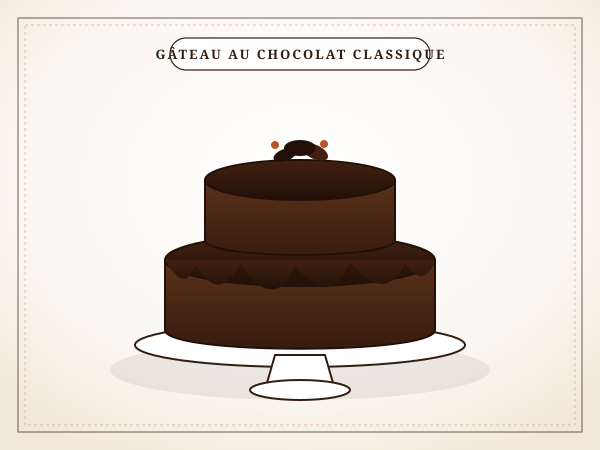

CRUMBLE CHORDS
Classic bakery recipes
for every season.
Crumble Chords is an archive of time-honored bakery creations. From double-tiered chocolate cakes and crisp sablé tarts to morning brioche cinnamon rolls, find pure baking inspiration made with genuine pantry staples.

Signature Counter Bake
Classic Chocolate Cake
Signature Counter Bakes
Featured Bakery Classics
Our most cherished bakery staples, tested for reliable home oven results.
Seasonal Baking Calendar
Choose Your Season • Find Your Perfect Recipe
Baking harmonizes with the climate. Explore recipes curated specifically for Spring, Summer, Autumn, and Winter.